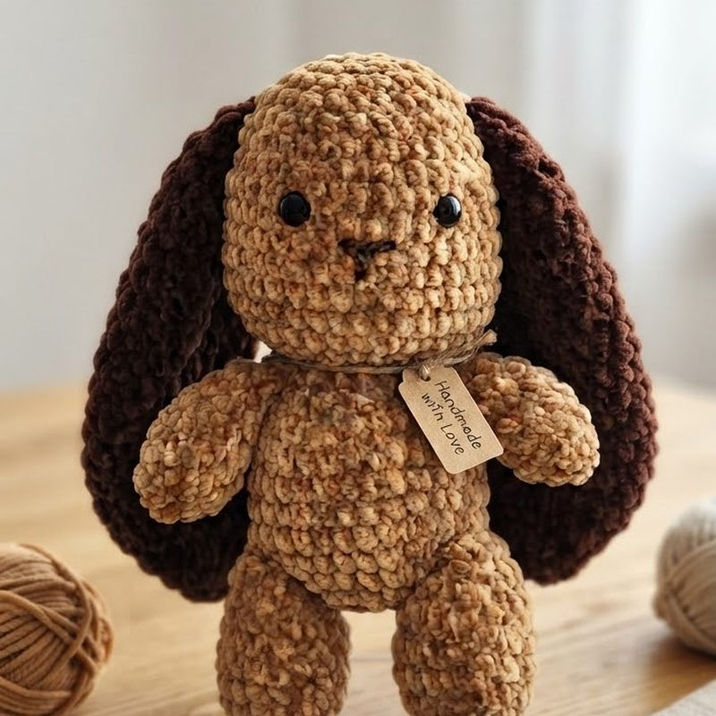
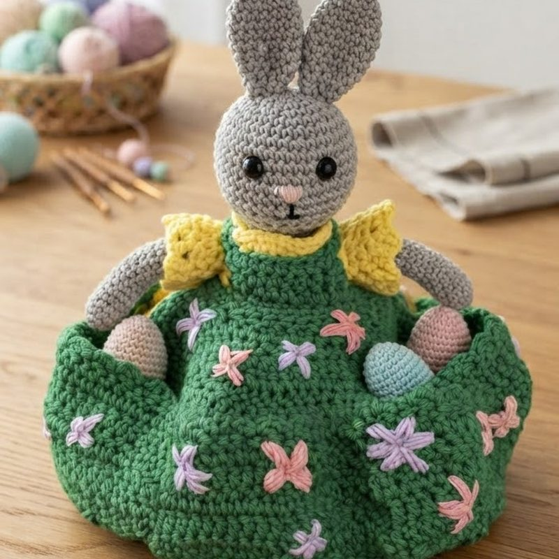
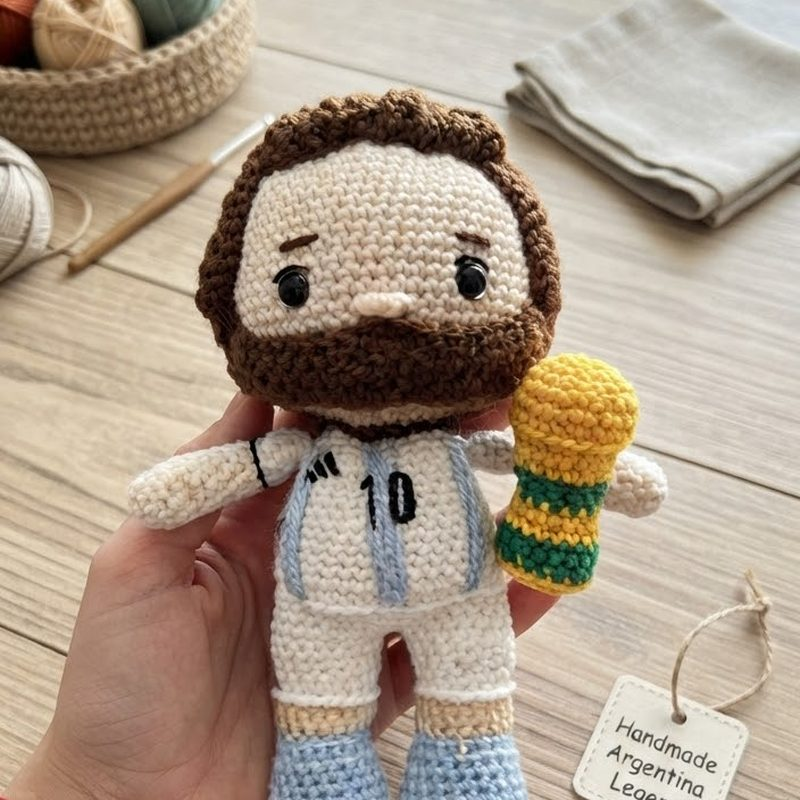
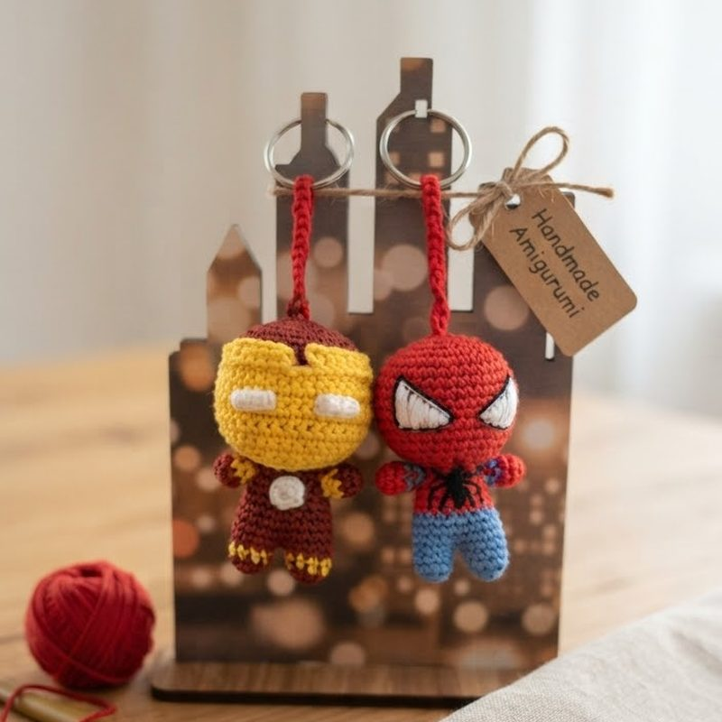
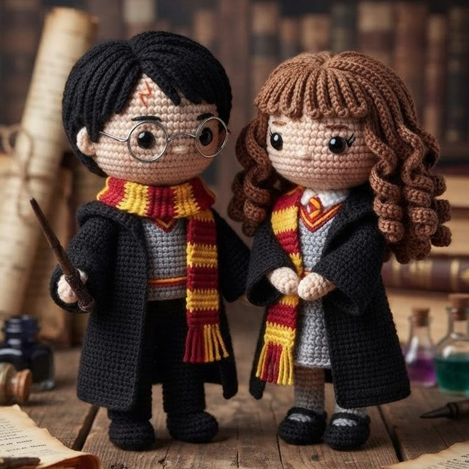

Amigurumi
My hobby
Amigurumi came into my life by accident. One winter I bought a hook and a single ball of yarn, mostly just to have something to do in the evenings. My first animal turned out badly — one ear was larger than the other and the head did not sit straight on the body. But that was exactly what I liked about it. You can always tell when something was made by a person rather than a machine.
Technically, amigurumi differs from other crochet because it is worked in a continuous spiral. The round never closes; it simply keeps going. That is why no seam shows and the figure stays whole. The most important thing is density: the stitches have to be tight enough that the stuffing inside never peeks through. For that reason you use a hook one size smaller than the yarn label recommends, which felt completely wrong to me until I saw the difference.
Since then I have worked in two fairly different directions. Chenille yarn makes the soft, plush animals — the owl, the rabbits, the puppy. It is quick and forgiving to hold but merciless about mistakes, because every stitch is visible and there is no hiding a miscount. Cotton is the opposite: slow, precise, and good for small figures where the face and clothing carry all the character.
A small chenille animal takes roughly five hours. A detailed cotton figure takes several evenings, and most of that time goes into the face. What I like most is that the process is entirely predictable. If you follow the pattern exactly, the result always works out. That is so different from the rest of my day that it has turned into a kind of rest.






What I need
Chenille
Thick and soft, for the plush animals. Fast to work, but every miscounted stitch shows.
Cotton
Holds its shape and keeps the stitches crisp, which is what small detailed figures need.
Hook
One size smaller than the label says, so the fabric stays tight and the stuffing never shows through.
And some patience
The first figure never comes out the way you pictured it.